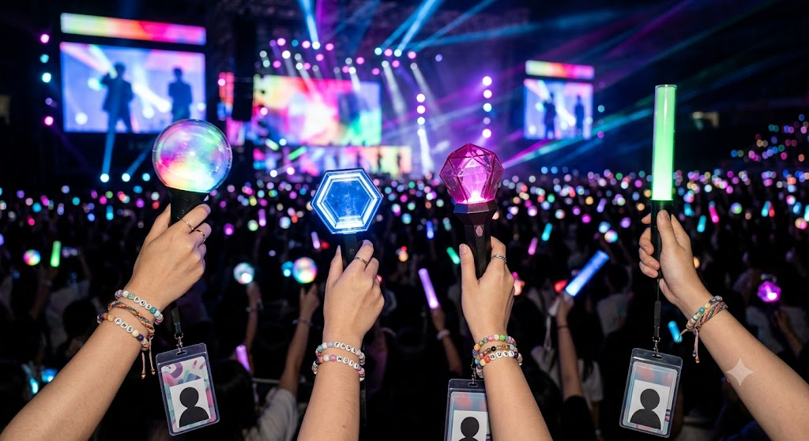

K-POP

このページでは、私の好きな音楽について紹介します。 好きなアーティストや、おすすめの曲、音楽との思い出などを掲載していく予定です。

このページでは、私の好きな音楽について紹介します。 好きなアーティストや、おすすめの曲、音楽との思い出などを掲載していく予定です。
Stray Kids...
— Stray Kids (@Stray_Kids) November 04, 2025
TWICEも所属しているJYPアーティスト
楽曲はメンバー3人から構成される3RACHAによる完全自主制作
独自のサウンドと、圧巻のパフォーマンスが魅力の8人組ボーイズグループ！
曲調もダンスもキャッチーでTik Tokでもバズった１曲！MVに登場するハートのキャラクターも印象的でSTAY(ファンネーム)から愛されてます♡
ライブでも大盛り上がりの人気曲！7年前にリリースされた曲だけどSTAYに長年愛されてる楽曲です
頼れる絶対的リーダー！楽曲制作の要（3RACHA）で、優しくメンバーを包み込むパパ的存在。
「踊る彫刻」と呼ばれる圧倒的ビジュアルと、誰もが認める高いダンススキル。ツンデレな性格も魅力！
超高速かつパワフルなラップが唯一無二。普段は愛嬌たっぷりでいじられキャラなギャップ萌え。
ステージ上での表現力と色気が凄まじいメインダンサー。絵を描くのが趣味なアーティスティックな一面も。
ラップ、高音ボーカル、作詞作曲まで何でもこなす天才オールラウンダー。ムードメーカーです！
天使のような可愛いビジュアルから放たれる、超重低音の「ディープボイス」が最大の武器！
ブレない安定感抜群の歌声を持つメインボーカル。真面目そうに見えて、実はユーモアたっぷり。
みんなに愛される最年少（マンネ）。チャーミングな笑顔と、年々増していく大人の色気に注目！
BABY MONSTER...
— BABAYMONSTER (@YGMAMYMONSTER_) January 14, 2025
YGからの７年ぶりにデビューしたガールズグループ
圧倒的な歌唱力、ラップ、ダンススキルを兼ね備えた、
まさに「怪物」級の実力を持つメンバーが揃ってます！
期待のデビュー曲！YGならではのクールな曲調でべビモンを代表する1曲
SHEESHとは真逆の完全バラード
メンバーの歌唱力が存分に感じられる曲です！
圧倒的なカリスマ性を放つ最年長日本人メンバー。重みのある抜群のラップスタイルが超かっこいい！
ディズニー・プリンセスのような上品なビジュアルと、透明感あふれる美しい高音が魅力のタイ出身メンバー。
作詞作曲もこなす日本人メンバー。超高速ラップからエモーショナルなボーカルまでこなす実力派！
ボーカル、ラップ、ダンスすべてがトップクラスの「確信のセンター」。圧倒的なスター性があります。
ソウルフルで深みのある唯一無二 of メインボーカル。圧倒的な表現力の塊です！
クラシックで落ち着いた美しい歌声が特徴。普段のふんわりした優しい雰囲気とのギャップも素敵。
抜群のポップさと天性の才能を持つ最年少（マンネ）。ステージ上での表情管理が天才的です！